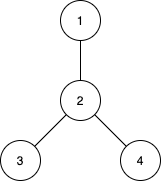

| Category | Difficulty | Likes | Dislikes |
|---|---|---|---|
| Algorithms | Hard | 568 | 44 |
dynamic-programming | bit-manipulation | tree | enumeration | bitmask
There are n cities numbered from 1 to n. You are given an array edges of size n-1, where edges[i] = [ui, vi] represents a bidirectional edge between cities ui and vi. There exists a unique path between each pair of cities. In other words, the cities form a tree.
A subtree is a subset of cities where every city is reachable from every other city in the subset, where the path between each pair passes through only the cities from the subset. Two subtrees are different if there is a city in one subtree that is not present in the other.
For each d from 1 to n-1, find the number of subtrees in which the maximum distance between any two cities in the subtree is equal to d.
Return an array of size n-1 where the dth element (1-indexed) is the number of subtrees in which the maximum distance between any two cities is equal to d.
Notice that the distance between the two cities is the number of edges in the path between them.
Example 1:

Input: n = 4, edges = [[1,2],[2,3],[2,4]]
Output: [3,4,0]
Explanation:
The subtrees with subsets {1,2}, {2,3} and {2,4} have a max distance of 1.
The subtrees with subsets {1,2,3}, {1,2,4}, {2,3,4} and {1,2,3,4} have a max distance of 2.
No subtree has two nodes where the max distance between them is 3.Example 2:
Input: n = 2, edges = [[1,2]]
Output: [1]Example 3:
Input: n = 3, edges = [[1,2],[2,3]]
Output: [2,1]
Constraints:
2 <= n <= 15edges.length == n-1edges[i].length == 21 <= ui, vi <= n(ui, vi) are distinct.